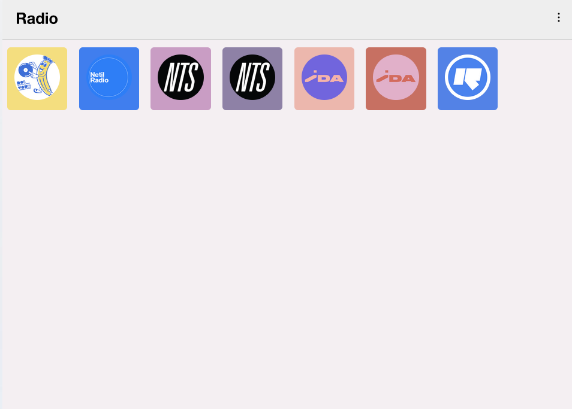

Our goal: build a web application frontend.
Here’s a minimal example:

Create a folder Music and put some mp3s in it.
//server.js
const openradio = require("openradio");
const radio = openradio();
const http = require("http");
const fs = require("fs");
http
.createServer((req, res) => {
res.setHeader("content-type", "audio/mp3");
radio.pipe(res);
})
.listen(3000);
var { extname } = require("path");
var list = fs
.readdirSync("./Music", { withFileTypes: true })
.filter(function(item) {
// Make it return true
return (
item.isFile &&
(extname(item.name) === ".mp3" ||
extname(item.name) === ".ogg" ||
extname(item.name) === ".opus" ||
extname(item.name) === ".aac" ||
extname(item.name) === ".m4a" ||
extname(item.name) === ".wav" ||
extname(item.name) === ".flac" ||
extname(item.name) === ".ape" ||
extname(item.name) === ".wv" ||
extname(item.name) === ".oga")
);
})
.map(songItem => songItem.name);
// Fetch & Play song randomly fron Music Directory!
radio.play(fs.createReadStream(`./Music/${list[Math.floor(Math.random() * list.length)]}`));
radio.on("end", () => {
radio.play(fs.createReadStream(`./Music/${list[Math.floor(Math.random() * list.length)]}`));
});Let’s get some streaming audio links. There is a free API called Radio Browser, with full documentation. The data is available as JSON values.
Let’s make a stations.json file to hold our data:
{
"stations": [
{
"title": "Do!! You!!",
"website": "https://doyou.world",
"streamUrl": "https://doyouworld.out.airtime.pro/doyouworld_a",
"logoUrl": "https://orllewin.uk/rad/rad_doyou_256.png",
"colour": "#f4de7f"
},
{
"title": "Netil Radio",
"website": "https://www.netilradio.com/",
"streamUrl": "https://netilradio.out.airtime.pro/netilradio_a",
"logoUrl": "https://orllewin.uk/rad/netil_radio_256.png",
"colour": "#407eee"
},
{
"title": "NTS 1",
"website": "https://www.nts.live/",
"streamUrl": "https://stream-relay-geo.ntslive.net/stream",
"logoUrl": "https://orllewin.uk/rad/rad_nts_256.png",
"colour": "#c99dc4"
},
{
"title": "NTS 2",
"website": "https://www.nts.live/",
"streamUrl": "https://stream-relay-geo.ntslive.net/stream2",
"logoUrl": "https://orllewin.uk/rad/rad_nts_256.png",
"colour": "#8E81A6"
}
]
}What does a basic audio player look like?
Minimalist template of working audio playing web app:
<!DOCTYPE html>
<html>
<body>
<audio id="music" preload="all">
<!-- uncomment the following line and add comment to the one after to play a local audio file assets/a.mp3 -->
<!-- <source src="http://localhost:8000/assets/a.mp3"> -->
<source src='https://stream-relay-geo.ntslive.net/stream'>>
</audio>
<button onclick="playMusic()">play</button>
<script>
function playMusic(){
let music = document.getElementById('music');
music.play();
}
</script>
</body>
</html>Working in a team, build a web radio application. Talk about your design goals, strategy and what you do and don’t know.
Begin by sketching your application out. Make a compelling front-end, something that you would use yourself.
For this assignment you are to make a unique weather “app” via accessing the US Government Weather API from the National Weather Service.
See above for documentation of the API.
Using our starter code in class and the json data file for Purchase, create a compelling weather program website/app.
Pay attention to:
Link to your weather program from your class website landing page.
Upload the link to your finished program.
Advanced: Make it mobile-responsive.